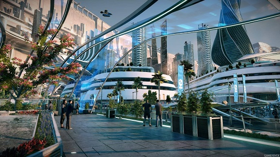

Технологии будущего
По мере того как мы все дальше вступаем в цифровую эпоху, роль компьютеров в нашей жизни становится все более значительной. От наших домов до наших рабочих мест компьютеры являются важнейшими инструментами, которые помогают нам общаться, учиться и достигать наших целей. Но что ждет эту технологию в будущем? В этой статье мы рассмотрим некоторые способы, с помощью которых компьютеры формируют будущее, а также потенциальные преимущества и недостатки этих разработок.
Одной из областей, где компьютеры, вероятно, будут играть все более важную роль, является сфера здравоохранения. С помощью искусственного интеллекта (ИИ) врачи и исследователи уже используют компьютерные алгоритмы для анализа огромных объемов данных для диагностики и лечения заболеваний. В будущем мы можем ожидать, что эта тенденция сохранится, и машины будут выполнять более сложные задачи и помогать врачам принимать более обоснованные решения. Однако существуют также опасения, что зависимость от компьютеров в здравоохранении может привести к дегуманизации медицины, когда пациенты станут просто точками сбора данных, а не индивидуумами с уникальными потребностями и заботами.
Еще одна область, где компьютеры уже меняют ландшафт, - это сфера труда. Автоматизация все чаще заменяет человеческий труд во многих отраслях промышленности, при этом машины берут на себя задачи, которые ранее выполнялись людьми. Хотя эта тенденция может привести к повышению эффективности и продуктивности, она также вызывает опасения по поводу перемещения рабочих мест и неравенства доходов. По мере того как все больше и больше рабочих мест автоматизируется, важно будет найти способы обеспечить, чтобы все члены общества могли извлечь выгоду из повышения производительности, которое обеспечивают компьютеры.
Возможно, самым захватывающим аспектом будущего компьютеров является потенциал для новых инноваций и прорывов, которые мы пока даже не можем себе представить. Учитывая стремительные темпы технологических изменений, трудно предсказать, каким будет следующее крупное событие. Однако мы можем быть уверены, что компьютеры будут продолжать играть центральную роль в нашей жизни и что они будут продолжать трансформировать то, как мы живем, работаем и взаимодействуем с окружающим миром.
Когда мы смотрим в будущее компьютеров, важно учитывать как потенциальные преимущества, так и недостатки этих разработок. В то время как компьютеры способны произвести революцию в мире в позитивном ключе, они также потенциально могут причинить вред, если их использовать безответственно. Поскольку мы продолжаем расширять границы возможного с помощью технологий, мы должны сохранять бдительность и быть уверенными в том, что используем эти мощные инструменты таким образом, чтобы это приносило пользу всем нам. Поступая таким образом, мы можем создать будущее, в котором компьютеры будут играть центральную роль в том, чтобы сделать наш мир лучше.